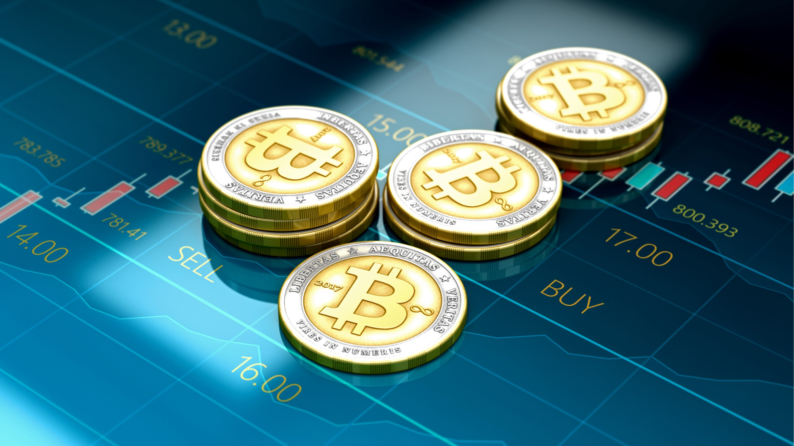

Subtitle of or quote from article
Just in time for Halloween, Bitcoin has come back from the dead.
The world’s most-traded cryptocurrency has jumped 25% in a matter of days, rising above $9,300 in Monday trading from just under $7,500 on Oct. 25.
This is effectively the coin’s second revival this year. After beginning 2019 stuck around $4,000, it surged over the summer to $12,000 before receding in recent months.
“After an extended period of low volumes and dismal sentiment, in a sudden instant, last Friday the crypto asset class has snapped back to life,” eToro’s Mati Greenspan wrote in a note to clients Monday.
What’s behind the sudden pop in price? Greenspan points to China. “The announcement from Chinese President Xi Jinping that China should ‘seize the opportunity’ to adopt blockchain has had a sweeping impact,” Greenspan noted. Xi’s comments came just a day after Facebook chairman and CEO Mark Zuckerberg warned Congress that if the U.S. didn’t lead the way in digital currencies—such as the one his company has proposed, Libra—China would seize the advantage.
The timing of those two comments mean that “the U.S.-China trade war now has a new battleground,” according to Greenspan. “After focusing on agriculture, imports-exports, technology, patent infringements, and spyware, the focus is now squarely on FinTech.”
Chinese authorities have said they want to crack down on Bitcoin mining, citing its intensive electricity use as wasteful. (They probably also aren’t overly enamored with a coin that could help people hide capital from the government.)Even though it might seem like a contradiction, Xi’s announcement that he wants Chinese companies to invest in blockchain isn’t actually a departure from the government’s seemingly antagonistic stance toward Bitcoin. Rather, it is a continuation of a government-led process to explore digital currency, including an effort by the People’s Bank of China to develop what might turn into a sort of electronic yuan.
Any such effort would, of course, be strictly controlled by China’s capital controls, but Greenspan thinks the government has effectively taken a live-and-let-mine approach toward Bitcoin: Cryptocurrency is just widespread enough to merit policing resources, and there are far bigger security and capital-control gains to be had in developing an official Chinese blockchain.
This article was taken from this site.